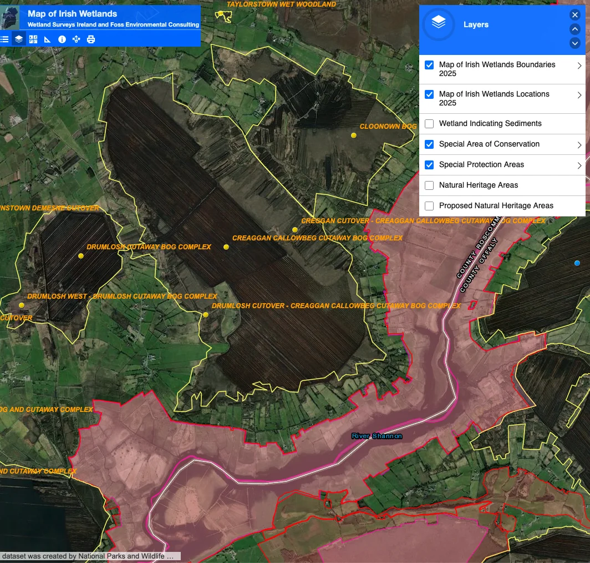

About Cornafulla Bog

Location and Boundaries of Cornafulla Bog
Cornafulla Bog is located approximately 8.5 km south-west of Athlone in County Roscommon, to the south of the R446 (Old Athlone to Ballinasloe Road). The River Shannon flows to the south and south-east of the site, and the Shannon Callows Special Area of Conservation (SAC) and Middle Shannon Callows Special Protection Area (SPA) lie along its southern boundary. The Clonmacnoise Monastic Site is located approximately 2km to the south. An industrial narrow-gauge railway line runs through the bog, connecting it to the nearby Clooniff Bog to the south-west.
Physical Layout and Features of Cornafulla Bog
The site extends to approximately 465 hectares and comprises two distinct sectors: a large, rectangular main bog and a much smaller, square-shaped bog to the west. Agricultural land occurs to the west and north of the site, while extensive areas of remnant high bog and cutover bog are present along the eastern and southern margins.
History of Industrial Peat Production
Industrial peat production on Cornafulla Bog took place between 1987 and 2020. The bog is considered a relatively young production site—large-scale peat extraction for electricity began in Ireland in 1946—and it contains comparatively deep peat reserves in places, often exceeding 2.5 metres in depth. The peat substrate is predominantly red or Sphagnum peat, underlain by a mixture of gravel and shell marl. Portions of the former production area had previously undergone natural re-vegetation prior to being re-developed for active milled peat production, and as a result it is anticipated that the more recent production areas will follow a similar trajectory of natural re-colonisation following cessation. To enable milled peat production across large, open fields, the bog was engineered with an extensive drainage network that continues to shape the landscape today. Parallel open drains were cut at 50 ft (15.24 m) centres across the entire working area, dividing it into fields approximately 45 ft (13.72 m) wide. Typically, the field drains range from 800 to 2,000 yards (731–1,829 m) in length and discharge at either end into piped outfalls running at 90° to the open drains, which in turn discharge into the nearest natural outfall. Beyond each outfall, a headland or turning ground 70–100 ft (21–30 m) wide runs parallel to the piped outfall, enabling production machinery to turn between fields. When fully developed, the open field drains reach a depth of approximately 4 ft 6 in (1.22 m) and a top width of about 5 ft (1.5 m). These straight drains, long fields, and wide headlands explain the regular, linear pattern that remains clearly visible across the bog surface.
Post-Production Rehabilitation and Recovery
Following the cessation of peat production in 2020, the site entered a managed recovery phase. A key rehabilitation strategy employed by Bord na Móna—the semi-state company established under the Turf Development Act of 1946 to mechanise peat harvesting in Ireland—has been the active re-wetting of former production areas through the blocking of the extensive drainage network. This approach is particularly effective in the Shannon region, where rehabilitation plans note that many bogs lie below the winter water level of the River Shannon. These bogs were kept dry for production only through constant pumping, and the decommissioning of pumps allows them to flood readily, transforming large areas into new wetlands. During its operational phase, Cornafulla Bog functioned with a pumped drainage system, with two water pumps installed on-site. Bogs with pumped drainage systems are more likely to develop wetland habitats once industrial peat production ceases, particularly where appropriate restoration measures are implemented. Techniques such as blocking drains promote the re-establishment of more typical bog communities, including Sphagnum-dominated embryonic bog habitats. This process is dependent on the retention of an acidic peat layer in situ and the restoration of water levels to the peat surface.
Ecological Outcomes After Peat Production Cessation
The decommissioning of the pumped drainage system has been the most significant driver of ecological change on the site. While the development of a fully functioning raised bog is a long-term process, several positive hydrological outcomes are evident five years after cessation. The removal of pumps and the blocking of outfalls have enabled low-lying basins to re-wet naturally, forming a wetland mosaic that now comprises a substantial portion of the site and includes areas of open water, fen, and reed beds. In parallel, the primary rehabilitation objectives of stabilising former production areas and mitigating silt run-off are contributing to the protection of the River Shannon system. As a result of these changes, the site is transitioning from an active carbon source dominated by bare peat towards a more stable condition. Where sufficient peat depth and favourable hydrological conditions persist, embryonic bog communities—including Sphagnum mosses and Bog Cotton—are beginning to establish. Where a significant volume of acidic peat remains in situ, the bog’s long-term value as a carbon sink is entirely dependent on the maintenance of a high water table.
Long-Term Habitat Development Projections
Approximately 57% of the site is projected to develop into embryonic raised bog in the long term, primarily on areas of deeper peat. In addition, approximately 30% of the site has the potential to develop as wetland habitats, while a further ~10% is expected to develop as woodland and scrub, largely confined to higher or better-drained ground and currently expressed as dry, species-poor Birch woodland. The remaining proportion of the site is likely to support a range of other habitat types. Currently, the habitat mosaic includes areas of natural re-colonisation alongside these developing habitats. Remnant raised bog habitats at the margins of the site continue to function as important seed sources for recolonisation, despite historic degradation from drainage and burning.
Conservation Designations and Ecological Importance
The River Shannon Callows SAC (Site Code 000216) and the Middle Shannon Callows SPA (Site Code 004096) intersect the south-eastern margins of Cornafulla Bog, with a silt pond outlet passing through the designated area. Pilgrim’s Road Esker SAC and Mongan Bog SAC are located approximately 1.5km and 1.8km from the bog, respectively, while the 6th-century monastic site of Clonmacnoise, County Offaly, lies approximately 2km to the south. The site retains areas of ecological interest, with smaller patches of high bog and cutover bog generally rated as being of Local Importance. Overall, parts of Cornafulla Bog are considered to be of at least County Importance, with the potential for an upgraded conservation rating following further survey. The site is particularly notable for its complex of relatively intact high bog along the eastern and south-eastern margins. Much of this area is classified as the Annex I habitat Degraded raised bog still capable of natural regeneration [7120], with good representation of Depressions on peat substrates (Rhynchosporian) [7150]. In addition, a small area of wet, quaking bog supports numerous pools and lawns rich in Sphagnum species and meets the criteria for the Annex I priority habitat Active raised bog [7110].
Wildlife and Species Recolonization
The emerging wetland and bog mosaic is already supporting a range of species. In 2025, between 50 and 180 wintering Whooper Swans were recorded using flooded basins as a roosting site. Teal remain present in the vicinity of silt ponds, and Hen Harriers have been observed hunting along the southern margins. Golden Plover, an Annex I species, have been sighted using the site periodically as a roost, consistent with patterns observed along the Shannon system. Meadow Pipit, a Red-listed species, is widespread across high bog and cutover bog habitats and is expected to breed on site, while Amber-listed species recorded during winter include Kestrel, Snipe, and Stonechat. Otter (listed in Annex II of the EU Habitats Directive) has also been recorded using watercourses within Cornafulla Bog. Badger, Pine Marten, and Irish Hare (listed in Annex IV of the EU Habitats Directive) have also been recorded within marginal habitats around the site.
While historically much of Cornafulla Bog was used for commercial peat production, the seemingly barren expanses of former peat fields can now serve as a vital ecological haven, providing the wide, open vistas required by certain legally protected bird species. These fields have become accidental sanctuaries, offering critical roosting sites for wintering flocks of Golden Plover and Whooper Swan. This highlights the complex nature of conservation, where a landscape considered ecologically sterile in one respect can function as an essential refuge for vulnerable wildlife.
Archaeological Significance of Cornafulla Bog
Beyond their contemporary ecological value, these areas also serve as archives of a much deeper past, demonstrating that industrial bogs are far from monolithic wastelands. Stripping away the peat has uncovered bog wood and other preserved material, providing tangible evidence of earlier landscapes and ecological conditions. Such discoveries show that the bogs are not merely landscapes, but living archives that hold irreplaceable fragments of both natural and human history. This archaeological potential has been recognised in a number of surveys carried out. Cornafulla Bog was first surveyed during the 1992 Peatland Survey conducted by the Irish Archaeological Wetland Unit (IAWU), at which time 47 archaeological sites were recorded. The majority of these sites were located within Cornafulla townland, immediately north-east of a dryland island. The recorded features comprised field-surface sightings of worked wood and short lengths of light brushwood toghers. No further archaeological work was undertaken in the intervening period.
A re-assessment field-walking survey was subsequently conducted in July 2013. At that time, the majority of the bog was in full peat production. The report stated that Cornafulla Bog, covering approximately 242 ha, is located south-west of Athlone and south-east of the village of Cornafulla. Production activity extended across most of the site, with the exception of a small number of fields at the extreme south-eastern extent, where drains were present but peat extraction had not taken place for several seasons, if at all. During the 2013 re-assessment, two possible Road Class 3 togher sites were identified. These features were located to the south-east of the dryland island and were exposed along the same drain face, approximately 50m apart. The cluster of sites recorded during the 1992 survey was no longer extant at the time of re-survey. Overall, the archaeological features recorded were primarily concentrated to the north-east and south-east of the dryland island within the bog, at a location given as 53°21'26.1"N, 7°58'27.2"W.
These identified features are classified as Road Class 3 toghers, a specific archaeological designation used in Ireland by bodies such as the Irish Archaeological Wetland Unit and the Sites and Monuments Record. They describe lightly constructed peatland trackways, typically comprising short stretches of deliberately laid wood, often up to 15 m in length, with a discernible orientation. These trackways were generally constructed to facilitate passage across minor wet or unstable areas within bog landscapes, such as drains or shallow waterlogged zones. Construction commonly involves a loose to dense arrangement of mixed brushwood and light roundwood, occasionally secured with pegs, laid longitudinally and/or transversely in one or two layers. Timber elements are usually small, measuring 4–7 cm in diameter, and may be aligned coherently—such as east–west or north–south—indicating intentional placement. Some features appear as narrow bands of lightly laid brushwood, while others survive as denser concentrations, several pieces deep, sometimes visible in opposing drain faces and linked by more sparsely distributed material. These trackways are often fragmentary and may not be traceable beyond a single exposure. The date range for Road Class 3 toghers is broad, extending from the Neolithic period (c. 4000–2400 BC) to the medieval period (5th–16th centuries AD), reflecting repeated, small-scale episodes of local movement across bogs rather than long-distance or permanent routeways.
Ecological and Archaeological Transition
Together, these ecological and archaeological processes represent a profound, large-scale transition from intensive resource extraction to managed ecological restoration. Rather than wastelands, the bogs now form a vast, living laboratory, where it is possible to observe nature’s response to industry’s retreat, while also preserving tangible evidence of past landscapes and human activity.
Sources
Terrestrial Ecological Baseline Evaluation. Mott MacDonald/ BioSphere Environmental Services (BES) Limited, Commissioned by Bord na Móna. October 2018.
https://epawebapp.epa.ie/licences/lic_eDMS/090151b2806f06a5.pdf
Cornafulla Bog Draft Rehabilitation Plan. Bord na Móna. 2017.
https://leap.epa.ie/docs/b5b75626-2e09-43bb-b008-7a0674f527a7.pdf
Milled Peat Production: Irish Engineers Journal Supplement, 1970, p.23-27
https://www.bordnamonalivinghistory.ie/article-detail/milled-peat-production/
Jane Whitaker, ADS Ltd. 2013:136 - CORNAFULLA BOG: Creggan/Drumlosh/Callowbeg/Cregganabeaka/Curraghnaboll/Cornafulla, Roscommon
https://excavations.ie/report/2013/Roscommon/0023086/